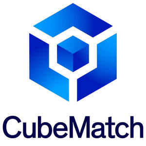

Trade Mark Journal No.2025/020 16 May 2025
UK00004198163 2 May 2025 (9,35,36,38,42)

- Class 9
- Business management software; Business software.
- Class 35
- Business consulting services; Business management and consulting services; Business management consulting services; Business marketing consulting services; Acquisitions (Business -) consulting services; Business consultancy services; Consulting services relating to marketing; Business organisation and management consulting services; Consulting services in business organization and management; Business consultancy and advisory services; Business advisory and consultancy services; Tax preparation and consulting services; Management consultancy services; Career placement consulting services; Business management and consultancy services; Consulting services in the field of Internet marketing; Business management consultancy services; Business management consultancy and advisory services; Consultancy and advisory services for business management; Business consultation services; Professional business consultancy services; Outsourcing services [business assistance]; Employment consultancy services; Business management consulting services in the field of information technology; Business consulting services for digital transformation; Personal management consultancy services; Assistance, advisory services and consultancy with regard to business management; Business management consultancy services provided via the Internet; Advertising and promotion services and related consulting; Assistance, advisory services and consultancy with regard to business planning; Business management and consultation services; Business marketing consultation services; Commercial consultancy services; Marketing consultation services; Business expertise services; Business advisory services; Employment counselling and consultancy services; Consulting services relating to publicity; Business intermediary and advisory services in the field of selling products and rendering services; Consultancy and advisory services relating to business management; Corporate management consultancy services; Consultancy services relating to the procurement of goods and services; Business management and organization consultancy services; Assistance, advisory services and consultancy with regard to business organization; Business research and advisory services; Marketing advisory services; Assistance, advisory services and consultancy with regard to business analysis; Business research services; Business consulting services in the agriculture field; Advisory and consultancy services relating to the procurement of goods for others; Business management and organisation consultancy services; Consultancy and advisory services in the field of business strategy; Advisory services for business management; Business management advisory services; Management (Advisory services for business -); Marketing services; Consultancy services regarding business strategies; Personnel management consultancy services; Business consulting; Business planning services; Sponsorship search consultancy services; Business accounting advisory services; Business consultancy services relating to manufacturing; Business management services; Recruitment consultancy services; Business consultancy services relating to product development; Business analysis services; Planning services for advertising; Advertising, marketing and promotional consultancy, advisory and assistance services; Business management consulting; Business management and consulting; Business consulting for enterprises; Professional business consulting; Business organization consulting; Business consultancy; Business research consulting; Business organisation consulting; Business planning and business continuity consulting; Business relocation consulting; Business organization and management consulting; Professional business consultancy; Business consultancy (Professional -); Consultancy (Professional business -); Business organisation and management consulting; Business marketing consultancy; Business planning consultancy; Business management consultancy; Business management and consultancy; Business consultancy to firms; Business process management and consulting; Business organization consultancy; Strategic business consultancy; Business administration consultancy; Business management and organization consultancy; Business consultancy to individuals; Consultancy regarding business organisation and business economics; Business management and enterprise organization consultancy; Business management advice relating to manufacturing business; Business appraisal consultancy; Professional consultancy relating to business management; Marketing consulting; Business organization and operation consultancy; Business management consultancy in the field of corporate travel; Business process management consultancy; Business recruitment consultancy; Advisory services relating to business management and business operations; Business organisation consultancy; Consultancy relating to business management; Business management and organisation consultancy; Business management organisation consultancy; Business organisation and management consultancy; Business management; Business marketing services; Business expertise; Business auditing; Consultancy relating to business planning; Business management consultation; Business consultation; Business management and consultation; Risk management consultancy [business]; Business planning services for enterprises; Business management advice; Business advisory services relating to business liquidations; Consultancy relating to business advertising; Business research; Research (Business -); Professional business consultations; Business strategy services; Business advice and consultancy relating to franchising; Business planning; Business organization advice; Advice in the field of business management and marketing; Commercial business management; Management consulting; Business advice; Advisory services (Business -) relating to the management of businesses; Business brokerage services; Business management for freelance service providers; Business organizational consultation; Business management advisory services relating to commercial enterprises; Business project management services; Outsourcing services in the field of business analytics; Business strategy and planning services; Business strategic planning services; Business consultancy services relating to insolvency; Business management advisory services relating to franchising; Business management assistance; Assistance (Business management -); Assistance with business management; Commercial assistance in business management; Providing advice in the field of business management and marketing; Professional business consultation relating to the operation of businesses; Consultancy relating to business management and organisation; Business management planning; Business management consultancy via the Internet; Business consultancy services for digital transformation; Business management for a trade company and for a service company; Business networking services; Business acquisitions consultation; Business secretarial services; Business management advisory services relating to industrial enterprises; Business advice relating to marketing management consultations; Consultancy relating to business organisation; Business management consultancy in the field of executive and leadership development; Business management assistance in the field of franchising; Consultancy relating to business analysis.
- Class 36
- Financial consulting services; Financial consulting and advisory services; Investment banking consulting and advisory services; Actuarial consulting and advisory services; Financial consultancy services; Taxation consultancy services [not accounting]; Financial advice and consultancy services; Financial strategy consultancy services; Consulting services relating to corporate finance; Financial advisory and consultancy services; Financial consultancy and advisory services; Financial consultancy and information services; Insurance and financial information and consultancy services; Consultancy services relating to investment; Financial and investment consultancy services; Advisory services relating to loan services; Consultancy services relating to insurance; Financial consulting; Investment business services; Business brokerage.
- Class 38
- Telecommunications consultancy services; Consulting services in the field of telecommunications.
- Class 42
- Information technology [IT] consulting services; IT services; IT consultancy, advisory and information services; Software consulting services; Computer consulting services; Information technology consulting services; Software consultancy services; Consulting services in the field of software as a service [SaaS]; Control technology consulting services; Computer software consulting services; Computer consultancy services; Engineering consultancy services; Information technology [IT] consultancy; Computer consultancy and advisory services; Information technology [IT] support services [troubleshooting of software]; Consulting services relating to computer software; Architecture consultancy services; Architectural consultancy services; Consultancy services for designing information systems; Fashion design consulting services; Environmental consultancy services; Town planning consultancy services; Computer and information technology consultancy services; Expert consultancy services in connection with computing equipment; Computer engineering consultancy services; Computer and software consultancy services; Computer software consultancy services; Consultancy services relating to product engineering; Providing information, advice and consultancy services in the field of computer software; IT services for data protection; Consultancy and information services relating to software rental; Technical advice and consultancy services in the field of telecommunications; Professional consulting services and advice about agricultural chemistry; Research services; Ship design consultancy services; Consultancy and information services relating to software maintenance.
CubeMatch Limited